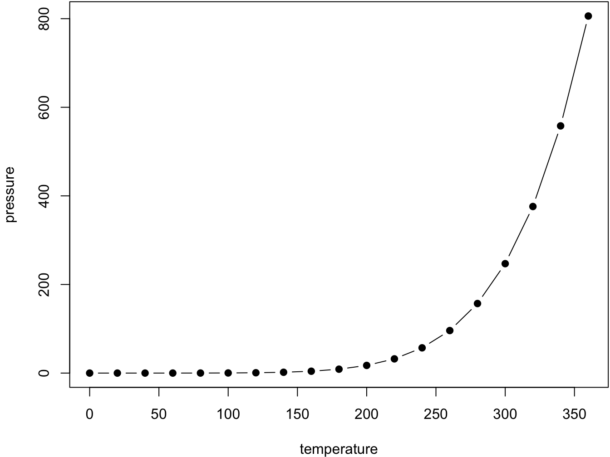

How to Build Out this Web Book
All chapters start with a first-level heading followed by your chapter title, like the line above. There should be only one first-level heading (#) per .Rmd file.
A section
All chapter sections start with a second-level (##) or higher heading followed by your section title, like the sections above and below here. You can have as many as you want within a chapter.
Cross-references
Cross-references make it easier for your readers to find and link to elements in your book.
Chapters and sub-chapters
There are two steps to cross-reference any heading:
- Label the heading:
# Hello world {#nice-label}.- Leave the label off if you like the automated heading generated based on your heading title: for example,
# Hello world=# Hello world {#hello-world}. - To label an un-numbered heading, use:
# Hello world {-#nice-label}or{# Hello world .unnumbered}.
- Leave the label off if you like the automated heading generated based on your heading title: for example,
- Next, reference the labeled heading anywhere in the text using
\@ref(nice-label); for example, please see Chapter ??.- If you prefer text as the link instead of a numbered reference use: any text you want can go here.
Captioned figures and tables
Figures and tables with captions can also be cross-referenced from elsewhere in your book using \@ref(fig:chunk-label) and \@ref(tab:chunk-label), respectively.
See Figure 1.
par(mar = c(4, 4, .1, .1))
plot(pressure, type = 'b', pch = 19)
Figure 1: Here is a nice figure!
Don’t miss Table 2.
knitr::kable(
head(pressure, 10), caption = 'Here is a nice table!',
booktabs = TRUE
)| temperature | pressure |
|---|---|
| 0 | 0.00 |
| 20 | 0.00 |
| 40 | 0.01 |
| 60 | 0.03 |
| 80 | 0.09 |
| 100 | 0.27 |
| 120 | 0.75 |
| 140 | 1.85 |
| 160 | 4.20 |
| 180 | 8.80 |
Parts
You can add parts to organize one or more book chapters together. Parts can be inserted at the top of an .Rmd file, before the first-level chapter heading in that same file.
Add a numbered part: # (PART) Act one {-} (followed by # A chapter)
Add an unnumbered part: # (PART\*) Act one {-} (followed by # A chapter)
Add an appendix as a special kind of un-numbered part: # (APPENDIX) Other stuff {-} (followed by # A chapter). Chapters in an appendix are prepended with letters instead of numbers.
Footnotes
Footnotes are put inside the square brackets after a caret ^[]. Like this one 1.
Citations
Reference items in your bibliography file(s) using @key.
For example, we are using the bookdown package (Xie 2022) (check out the last code chunk in index.Rmd to see how this citation key was added) in this sample book, which was built on top of R Markdown and knitr (Xie 2015) (this citation was added manually in an external file book.bib).
Note that the .bib files need to be listed in the index.Rmd with the YAML bibliography key.
The RStudio Visual Markdown Editor can also make it easier to insert citations: https://rstudio.github.io/visual-markdown-editing/#/citations
Blocks
Equations
Here is an equation.
\[\begin{equation} f\left(k\right) = \binom{n}{k} p^k\left(1-p\right)^{n-k} \tag{1} \end{equation}\]
You may refer to using \@ref(eq:binom), like see Equation (1).
Theorems and proofs
Labeled theorems can be referenced in text using \@ref(thm:tri), for example, check out this smart theorem 1.
Theorem 1 For a right triangle, if \(c\) denotes the length of the hypotenuse and \(a\) and \(b\) denote the lengths of the other two sides, we have \[a^2 + b^2 = c^2\]
Read more here https://bookdown.org/yihui/bookdown/markdown-extensions-by-bookdown.html.
Callout blocks
The R Markdown Cookbook provides more help on how to use custom blocks to design your own callouts: https://bookdown.org/yihui/rmarkdown-cookbook/custom-blocks.html
References
This is a footnote.↩︎